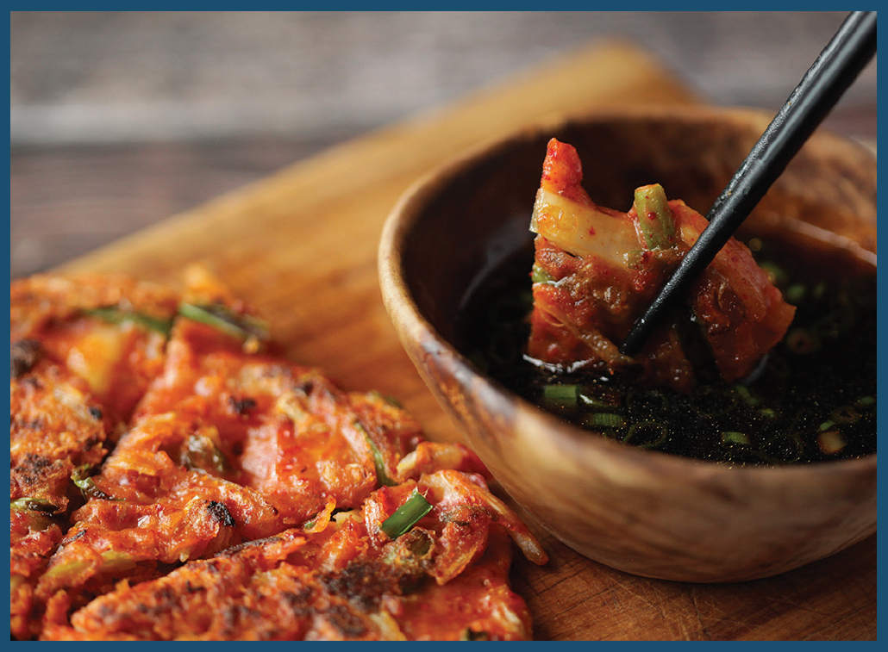
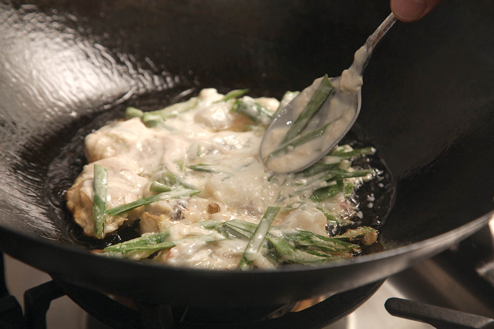
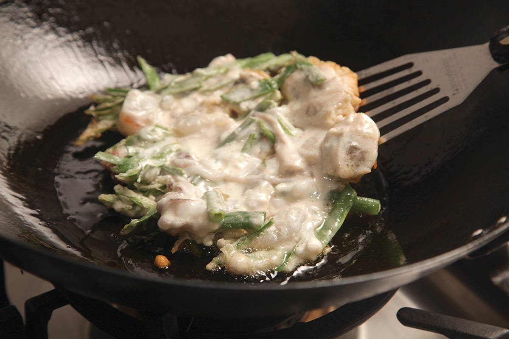
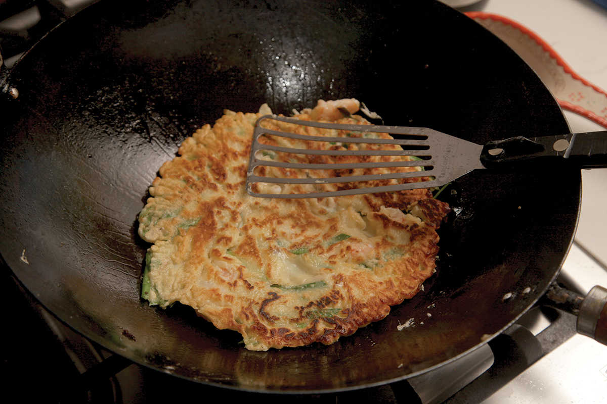
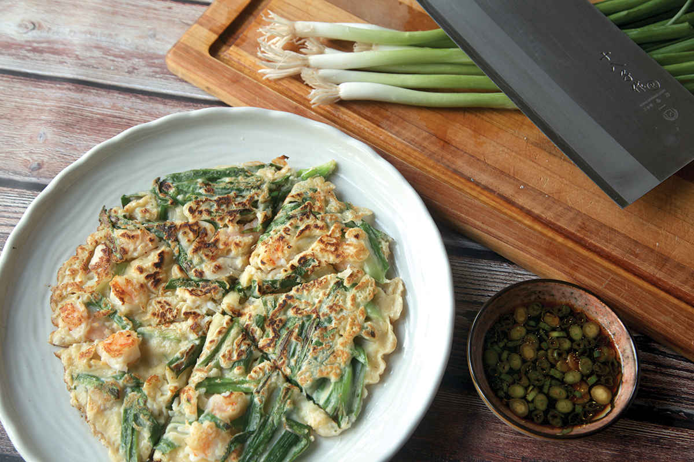

KOREAN-STYLE PANCAKES (BUCHIMGAE)

It’s difficult to think of a simpler, faster recipe than buchimgae, the catchall term for panfried Korean pancakes, and there is a huge variety. They can be made from a variety of flours or ground grains—wheat, buckwheat, mung bean, or rice, for instance. They can be crunchy mung bean pancakes stuffed with bracken (an edible fern), pork, bean sprouts, and kimchi (nokdu buchimgae), or they can be as thin as individual cabbage leaves with a light coating of batter (baechu buchimgae). They can be bright red from kimchi juice and chile flakes (kimchijeon) or an orderly forest of dark green scallions bound together with a thin egg batter, as in Busan’s famous dongnae pajeon.
For the simplest, all you need is flour, cornstarch, cold water, and a mix-in or two, and within ten minutes of setting foot in the kitchen you’ve got yourself an after-school snack, a light lunch, or a landing pad at the base of your stomach for a night of makgeolli (unfiltered Korean rice wine).
Aside from being simple, they’re extremely adaptable. Whether you’ve got half a zucchini, a chunk of onion, a bunch of scallions, some wilty kale, a carrot a bit past its prime; whether it’s the odd slice of bacon, chunk of ham, or bit of ground meat; whether it’s frozen shrimp, fresh squid, or the end of a jar of kimchi languishing in the fridge, they will be right at home in a Korean pancake.
Recipes for wheat-flour-based Korean pancake batter can vary a bit as far as batter ingredients go, and because they’re so easy and inexpensive to make, it’s worth starting with my recipe and then experimenting a bit to arrive at a formula that works best for you.
Some recipes call for 100 percent wheat flour, which produces pancakes that are chewy and dense due to the gluten that develops when you mix wheat proteins with water. If you prefer your pancakes a little lighter and crisper, adding cornstarch or potato starch will help (I like a ratio of four parts wheat flour to one part starch by volume). Adding eggs to your batter will cause them to puff and rise a bit as they fry, resulting in a texture somewhere between an omelet and a thick crepe. Using soda water in place of regular water will create a pancake with lacier edges and a slightly puffy internal texture. Adding baking powder gives you something very close to a fluffy, Western-style pancake. (I prefer leaving the eggs and baking powder out, as I enjoy the elastic stretch of an unleavened pancake, though sometimes I’ll use soda water in place of still.)




Whatever additional ingredients you add, there are two cardinal rules when making Korean pancake batter: the water must be cold (even ice cold, if you want to be exacting), and mixing should be minimal. Both of these steps ensure that you don’t form too much gluten in the batter, which leads to tough, leaden pancakes. Buchimgae batter should also be significantly thinner than American-style pancake batter. It should flow off of a spoon like wet paint when you lift it up out of the mixing bowl. As for ratio of batter to mix-ins, I like to keep the batter as light as possible; the bulk of the pancake should be vegetables, seafood, or meat, with just enough batter to hold it all together.
Here’s something neat: in virtually every recipe I can think of, Korean cabbage kimchi and German sauerkraut can be exchanged freely without fundamentally breaking the recipes. Try making sauerkraut pancakes or putting kimchi on your hot dog or Reuben next time. Your taste buds will be tingled and your senses enlivened. It will be a positive experience for all involved.
*You can think of sautéing as analogous to stir-frying, but typically done over relatively lower heat with the goal of evenly cooking and softening vegetables or pieces of meat, without the hard searing or smokiness associated with stir-fries.